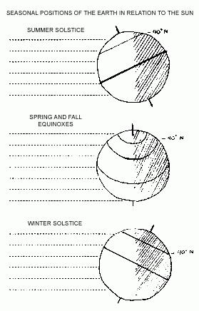

British Columbia: Paradise On The Pacific
September/October 1970
HOMESTEADING IN CANADA
by VIKKI OSINSKI
ANOTHER GARDEN
Long before Europeans came to spoil and pillage this North American Continent, Nootka, Salish, Kwakuitl, Haisla, Tsimshian, Makah, Bella Coola, and Skokomish "Indians" led a rich, full life among the bountiful nature of the Northwest Coast. Their elaborate tribal societies flourished in the abundance of natural game, berries and fishes. Their "status structure" was based on giving. The more generous a man, the more costly his gifts, the more bountiful his feast table . . . the higher his status in the community. In this land of plenty, of gentle rain and mild climate, civilization had reached a pinnacle of generosity.
Of course this was not a mythical idyllic paradise. There were frequent wars among tribes, but these were usually wars of acquisition, not annihilation. The chieftal powers were very weak, and when the social structure was threatened – by the arrival of aggressive, mercenary colonists – it rapidly collapsed. Little is left of those original inhabitants, or their culture, and most of what remains is generally misinterpreted and totally misunderstood. (For a totally empathetic and realistic view of this fantastic culture and others of the North and Central Americas I suggest reading MAN'S RISE TO CIVILIZATION, Peter Farb; Avon Books 1968, the source of the preceeding material.)
Much of the natural abundance of the great West Coast has changed too, of course, with the growing of great industrial ports and the gross exploitation (such as lumber and fishing) of the natural resources. Technology and pollution have decreed that salmon will no longer cram the rivers so thickly that "you could step across their backs to the other side (of the river) without getting your feet wet." But all is certainly not lost. We have abused the land but vast areas along the beautiful coast have never yet felt the foot of man or the scars of super-highways.
THE NORTHERN JUNGLE
If you were asked to identify a photo taken of the forests along the west coast of British Columbia, Canada, you would probably first associate the lush, green, fern-infested jungle with a tropical rain forest.
It seems unbelievable that the combination of high moisture and mild temperatures could produce a treble-layered forest at latitude of 60°-40° north. Only a bright green light filters through the first layers of giant conifers and the middle layers of broad-leafed trees to the bushes and ferns that blanket the floor. Although the forest teems with life – deer, squirrels, birds, bears, etc. – catching the animals is practically impossible due to the extreme density of the vegetation. Visibility is limited to a few feet. The rain forest also contains a "false floor" composed of dead and rotting trees. This floor is often 10 feet above the real ground and it's possible to fall through the layer of downed trees and become trapped below.
There are few roads to interrupt the splendor of these coastal mountain forests: Most of the traffic is handled by boats running along the coast. Isolated fishing villages and lumber camps dot the sheltered coves and exotic fjords along the rugged coast.
The coast itself is structured of fantastic wave-sculptured cliffs and sandy, rocky coves. These cliffs were "recently" carved by the receding glaciers and their faces are constantly being reshaped by the erosive and powerful Pacific surf. In spite of the tremendous pounding surf along the base of the cliff, the rocks swarm with a brilliant profusion of starfish, and the hardy abalone – a large, edible sea-snail.
Offshore you can see the rugged islands that were at one time mountain peaks. The thousand-mile waterway that runs around these hundreds of rocky fortresses was called "The Road that Walks" by the Indians. The entire area was literally carved out by the actions of the last great glacial period; mountains sunk and rivers submerged and now it is possible to sail among the peaks of these once mighty mountains.
In the sandy coves you can dig for steamer clams, search out Dungeness crab from their hiding places around rocks and pick up Pacific oysters in shallow water during low tide.
This is famous salmon and sturgeon country as well. Even though the numbers of these huge fish (sturgeons average 200 lbs.) have been greatly diminished by commercial fisheries, the shortage is hardly noticeable to individual fishermen. The Indians prepare fresh salmon by cleaning and splitting the fish and lacing each side (skin down) against a driftwood plank. The salmon is then smoked slowly over a low fire. The row, or eggs of the female sturgeon (and salmon) are used for making caviar.
This area has become known for the growing of consistantly high quality fruits, berries and vegetables. The Fraser River Valley, east of Vancouver, is especially rich agriculturally. The rich soil, mild temperatures and plentiful water insure maximum crop yields. Surprisingly, the valley is so temperate, wine grapes have been grown successfully.
Temperature extremes are rare. The average summer temperature near Vancouver is 59.8°, winter 38.2°. You can expect frost from November to mid-February and snow cover during this period is negligible.
Because of the northern position of the region (approximately 50° lat.) the sunlight received in the summer varies from 2-4 hours more than most parts of the United States. In other words the growing season for most crops is lengthened (over, say, Ohio) about 180 hours during the summer months. This often produces "monster" vegetables and fruits that mature several weeks earlier in the season, conversely, the winter days are shorter than lower latitudes, averaging about 8 1/2 hours of daylight.
The coast of British Columbia receives over 100 inches of rainfall a year. The average is even higher on the western mountain slopes. Most rain falls in the fall and winter. Though there is usually sufficient moisture through the summer, some eastern portions of the Fraser River Valley require irrigation which is easily furnished by the many clear mountain streams and rivers. The precipitation generally takes the form of heavy fogs and light drizzle as opposed to torrential downpours.
This region is considered safe from most natural disasters such as hurricanes, tropical storms, tornadoes and thunderstorms that damage so many parts of the world. Unlike the San Francisco Bay area, which is plagued by frequent earthquakes and unstable faulting, only two quakes have been recorded in the last 100 years in the Pacific northwest. Both in Puget Sound, Washington.
THE "NATURAL" CITY: VANCOUVER
Vancouver has to be one of the most nature-loving cities in the world! Within the city limits there are 128 parks. Included is famous Stanley Park with 1,000 acres, much of which is pure virgin forest. Conservation groups are very active and have recently purchased 400 acres 25 miles out of the city limits for use as a bird sanctuary. Many controls (on fishing and lumber industries) are being instituted to preserve the beauty and resources of the area.
Vancouver is a very active art and poetry center, too. There are several major art galleries in the city and some really great poetry, etc., is coming out of the Vancouver's underground. Art and science museums, plus a huge marina featuring killer whales and many rare Pacific fish, are also major attractions in this coastal "hub".
There is a district of large, old houses called the "West End" adjacent to Stanley Park in Vancouver. These old buildings have been converted to inexpensive boarding houses and apartments. Partially because the city is fairly new, crowded urban slum areas are virtually unknown. The beautiful University of British Columbia campus overlooks the sea in the extreme western part of the city.
The economy of Vancouver is based on trade or transportation (30%) with manufacturing, the lumber industry, fishing and publishing contributing most of the other 70%.
Vancouver is a perfect place to reap the benefits of civilization in a natural environment. It may be one of the least stifling places to settle while exploring the area for cheap land possibilities. With the variety of parks, inexpensive natural foods, clean housing and flourishing artistic awareness, Vancouver could make an important focal point for a wide variety of life styles.
 Here's why the Pacific Northwest has such a wide divergence of climate: Warm, moist ocean air moving inland cools, turns to fog and releases moisture as it rises over the obstructing mountains. The dry air then has very little precipitation to deposit on the mountains' eastern slopes, leaving that region semi-arid.Thus, within only a few miles, the character of the land changes rapidly from a forested, mild coast to sub-artic plains and bush. |
 |
|